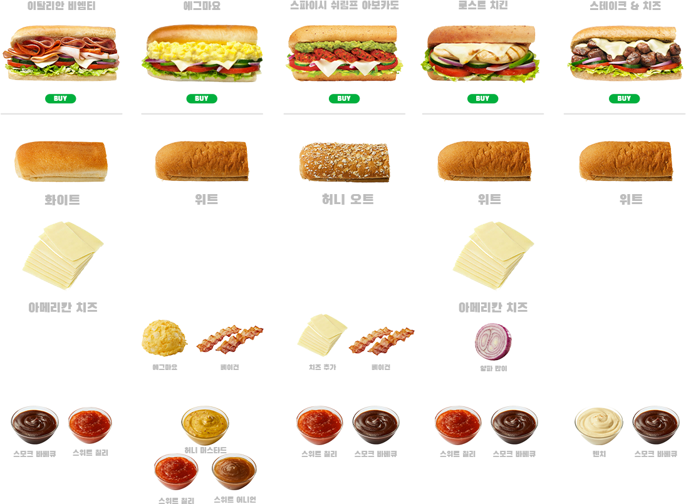
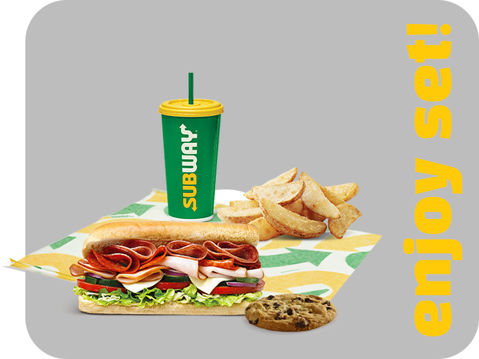
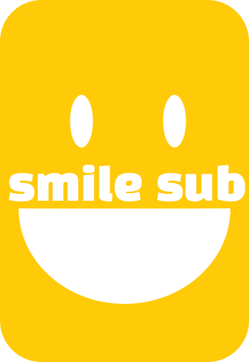

C
_________KIES!


샌드위치는 언제 먹어도 맛있다. 기분 전환이 필요할 땐 샌드위치를 먹어보자. 샌드위치가 아니더라도 각자 좋아하는 걸 먹고 기분이 좋았으면 좋겠다. 처음 코딩으로 웹사이트를 만들어봤는데 처음 서브웨이에서 주문할 때처럼 실수하고 만족스러운 결과를 얻진 못했지만 꿀 조합을 찾아보고 서브웨이를 찾아가는 걸 즐기게 되듯이 코딩으로 무언가를 만드는 게 익숙해졌으면 좋겠다. 그리고 사실 내 최고애정 샌드위치 가게는 퀴즈노스이다.